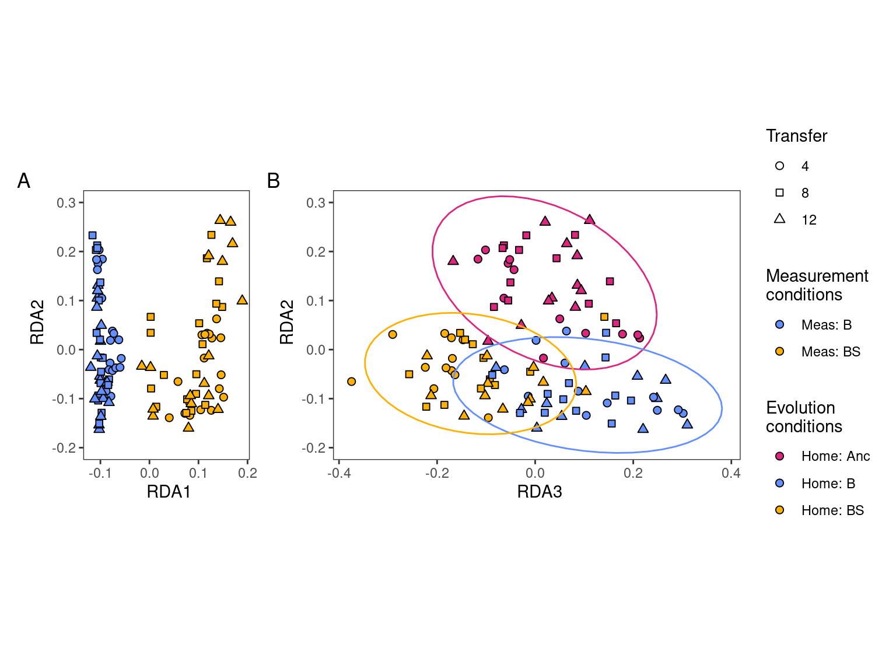

Ordination of species abundance data
Community composition workflow
1 Setup
Loads required libraries and sets global variables
2 Read
Read species abundance data (16S v3 amplicon counts) and do some light formatting of metadata
Show/hide code
sptable <- readr::read_tsv(here::here(data_sp, "species_counts_md.tsv")) %>%
dplyr::mutate(transfer = day/7)
counts_f <- sptable %>%
dplyr::group_by(sample) %>%
dplyr::mutate(f=count_correct/sum(count_correct)) %>%
dplyr::ungroup() %>%
dplyr::mutate(measure_env_short = dplyr::case_when(measure_env == "bact" ~ "Meas: B",
measure_env == "bact_strep" ~ "Meas: BS")) %>%
dplyr::mutate(home_env_short = dplyr::case_when(
evolution_env == "anc" ~ "Home: Anc",
evolution_env == "bact" ~ "Home: B",
evolution_env == "bact_strep" ~ "Home: BS")) %>%
dplyr::mutate(
measure_env_short = factor(measure_env_short, levels = c("Meas: B", "Meas: BS")),
home_env_short = factor(home_env_short, levels = c("Home: Anc", "Home: B", "Home: BS")),
day = factor(day),
replicate = factor(replicate),
strainID = factor(strainID, levels = names(hambi_colors)))3 Formatting
Some light formatting to subset data into distint tibbles for later plotting
Show/hide code
# these are communities of a (supposedly) known composition. Can be used with metacal
pos_ctrl_samples <- counts_f %>%
dplyr::filter(str_detect(sample, "pos_ctrl"))
# these are samples taken directly from YSK and represent the composition of the communities used to start the experiment
t0_samples <- counts_f %>%
dplyr::filter(!str_detect(sample, "pos_ctrl")) %>%
dplyr::filter(day == 0)
# only samples from the experiment
counts_f_experiment <- dplyr::anti_join(counts_f, pos_ctrl_samples,
by = join_by(sample, strainID, genus,
species, count, count_correct,
replicate, day, measure_env,
evolution_env, transfer, f,
measure_env_short, home_env_short)) %>%
dplyr::anti_join(., t0_samples,
by = join_by(sample, strainID, genus, species, count,
count_correct, replicate, day, measure_env,
evolution_env, transfer, f, measure_env_short,
home_env_short)) %>%
dplyr::mutate(
measure_env_short = factor(measure_env_short, levels = c("Meas: B", "Meas: BS")),
home_env_short = factor(home_env_short, levels = c("Home: Anc", "Home: B", "Home: BS")),
day = factor(day),
replicate = factor(replicate),
strainID = factor(strainID, levels = names(hambi_colors)))4 Data transformation
Some preliminary inspections of the number of samples with zeros. This is needed for zcompositions
Show/hide code
Here we will use the centered log-ratio transformation for the species abundances. The centered log-ratio can be interpreted as the log-fold change of species i relative to the average microbe in a sample. The formula for the transformation is:
\[ \text{clr}(\mathbf x)= \left(log \frac{x_i}{g(\mathbf x)} \right)_{i=1,...,D} \qquad \text{with} \quad g(\mathbf x) = \left(\prod_{i=1}^Dx_i\right)^{1/D} = \exp\left(\frac{1}{D}\sum_{i=1}^D \log x_i\right)\text{,} \tag{1}\]
We will use the implementation of centered log-ratio transform in the compositions package
Show/hide code
set.seed(234781)
# exclude these species because they have too many zeros
lowstrainsv <- c(
"HAMBI_0097",
"HAMBI_2792"
)
# make a species count matrix
count_mat <- counts_f_experiment %>%
dplyr::filter(!(strainID %in% lowstrainsv)) %>%
dplyr::select(sample, strainID, count) %>%
dplyr::mutate(count = count + 1) %>%
# important to arrange by sample as this makes some later joins easier
dplyr::arrange(sample) %>%
tidyr::pivot_wider(names_from = "strainID", values_from = "count") %>%
tibble::column_to_rownames(var = "sample") %>%
data.frame()
# calculate clr
clr_mat <- compositions::clr(count_mat)
env_mat <- counts_f_experiment %>%
dplyr::select(sample, home_env_short, measure_env_short) %>%
distinct() %>%
# important to arrange by sample as this makes some later joins easier
dplyr::arrange(sample) %>%
tibble::column_to_rownames(var = "sample") %>%
data.frame()5 Constrain ordination - Redundancy analysis (RDA)
Linear constrained ordination methods implicitly based on Euclidean (RDA) or Hellinger/chord/other (tb-RDA) distances. The calculation (detailed below) can be simply described as a set of (multiple) linear regression analyses, where species abundances (for each species in the species composition matrix separately) are regressed against (one or several) environmental variable(s). The result is that variation in species composition is decomposed into variation related to environmental variables (represented by constrained/canonical axes) and not related to environmental variables (unconstrained axes). The number of constrained axes is equal or lower than the number of quantitative explanatory variables; in the case of a qualitative/categorical variable, the number of constrained axes is equal to the number of categories in that variable minus one. Each canonical axis is a linear combination of all explanatory variables.
The algorithm of RDA can be summarised as follows (figure 1 and figure 2). The matrix of species composition (sample x species) and the matrix of environmental variables (sample x env.variables, for simplicity containing only one env. variable in the illustration below) needs to be available.
Abundances of the first species (spe1) are regressed against environmental variable (env1) by linear regression (or by multiple regression if more env. variables are available), with spe1 as the dependent variable and env1 (and other env. variables if available) as explanatory.
The values of species abundances fitted by the regression model (i.e. located on the regression line) are stored in the matrix of fitted values, while residuals of species abundances (the difference between observed abundances and fitted abundances) are stored in the matrix of residuals.
The same is repeated for all species in a matrix of species composition. Resulting matrices of predicted values and residual values have the same size (no. of samples x no. of species) as the original matrix of species composition.
The matrix of predicted values is used in PCA to extract constrained ordination axes, while the matrix of residual values is used in PCA to extract unconstrained axes.
In the example on figure 2 with only one explanatory variable there is only one constrained ordination axis (the second, vertical one in the ordination diagram is the first unconstrained axis).
Perform the RDA analysis
Summary information of the RDA
Call:
rda(formula = clr_mat ~ home_env_short + measure_env_short, data = env_mat)
Partitioning of variance:
Inertia Proportion
Total 38.14 1.0000
Constrained 23.39 0.6133
Unconstrained 14.75 0.3867
Eigenvalues, and their contribution to the variance
Importance of components:
RDA1 RDA2 RDA3 PC1 PC2 PC3 PC4
Eigenvalue 20.3041 2.11230 0.97722 3.72409 2.43855 1.61198 1.47178
Proportion Explained 0.5323 0.05538 0.02562 0.09764 0.06393 0.04226 0.03859
Cumulative Proportion 0.5323 0.58770 0.61332 0.71096 0.77489 0.81715 0.85574
PC5 PC6 PC7 PC8 PC9 PC10 PC11
Eigenvalue 1.22107 0.85688 0.69546 0.56983 0.42491 0.378216 0.337446
Proportion Explained 0.03201 0.02247 0.01823 0.01494 0.01114 0.009916 0.008847
Cumulative Proportion 0.88775 0.91021 0.92845 0.94339 0.95453 0.964443 0.973290
PC12 PC13 PC14 PC15 PC16 PC17
Eigenvalue 0.254564 0.224066 0.174233 0.136792 0.104395 0.05645
Proportion Explained 0.006674 0.005874 0.004568 0.003586 0.002737 0.00148
Cumulative Proportion 0.979964 0.985839 0.990407 0.993993 0.996730 0.99821
PC18 PC19 PC20
Eigenvalue 0.0323586 0.0236246 0.0122998
Proportion Explained 0.0008484 0.0006194 0.0003225
Cumulative Proportion 0.9990582 0.9996775 1.0000000
Accumulated constrained eigenvalues
Importance of components:
RDA1 RDA2 RDA3
Eigenvalue 20.3041 2.11230 0.97722
Proportion Explained 0.8679 0.09029 0.04177
Cumulative Proportion 0.8679 0.95823 1.000005.1 Explained variation
Constrained ordination is a set of multivariate regression analyses, and as in ordinary least squared regression, the effect size is measured by R2, the coefficient of determination. R2 quantifies the variation in species composition explained by environmental variable(s), and can be calculated (if no covariables are included) as the sum of eigenvalues of all constrained axes divided by the total variation (sum of eigenvalues of all axes).
The value of R2 in constrained ordination suffers from the same drawback as in ordinary regression, namely that it decreases with the number of samples in the dataset and increases with the number of explanatory variables, making the values incomparable between datasets of different size. The solution is to use adjusted R2. The absolute value of explained variation itself is not too informative on its own unless it is put into the context, for example by comparing it to the variation the same number of explanatory variables could possibly explain on the same species composition data. Even if the explanatory variables are in fact randomly generated, the R2 is non-zero and positive (in contrast to adjusted R2, which may be zero or even negative), and to decide whether the results are interpretable, it is useful to test their significance by Monte Carlo permutation test.
Variation explained by RDAs and PCs
Show/hide code
data.frame(value = c(rda_ord_aitc$CCA$eig/rda_ord_aitc$tot.chi*100,
rda_ord_aitc$CA$eig/rda_ord_aitc$tot.chi*100)) %>%
rownames_to_column() %>%
mutate(type = if_else(str_detect(rowname, "RDA"), "RDA", "PC")) %>%
mutate(rowname = fct_inorder(rowname)) %>%
ggplot() +
geom_col(aes(x =value , y = rowname, fill = type)) +
labs(x = '% variation', y = "") +
scale_y_discrete(limits=rev)There are n-1 RDA axis for each categorical variable in the constrained ordination. In our case, measure_env_short has 2 categories and home_env_short has 3 categories for a total of 3 RDA axes. Together the Measurement environment and the Home environment explain about 60% of the variance in species composition. Is this a significant amount of variance explained? To check we will follow the tutorial here.
First let’s compare this amount of variance explained in the constrained ordination compares to the variation explained in an unconstrained analysis (i.e., just regular PCA). PCA can kind of be thought of generating latent uncorrelated variables that explain the most variance possible. So if we check the amount of variance explained by PC1 and PC2 we are kind of comparing the maximum amount of variance explained with “idealized” uncorrelated latent variables
Show/hide code
So this analysis shows that 61% of the variance can be explained by 2 real variables while 70% of the variance could be explained by 2 idealized, uncorrelated latent variables. So this analysis shows that using the measurement and the home environemnts we are explaining something like 88 % of the maximum possible amount of variance explained in community composition.
Now we test whether the amount of variance explained is higher than we would expect for just two random variables.
Show/hide code
set.seed(12353)
randomize_rda <- function(){
# reshuffle the rows with environmental variabels
env_mat_rand <- env_mat[sample(1:nrow(env_mat)),]
rda_ord_aitc_rand <- vegan::rda(clr_mat ~ home_env_short + measure_env_short, data = env_mat_rand)
vegan::RsquareAdj(rda_ord_aitc_rand)$r.squared
}
# run the simulation 999 times
sim_r2 <- replicate(n = 999, randomize_rda(), simplify = TRUE)So using the variables definitely is better than what we see after 999 Monte Carlo randomization permutations
Show/hide code
vegan::rda(clr_mat ~ home_env_short + measure_env_short, data = env_mat_rand)
And the result is clearly statistically significant
5.2 Variance partitioning
In case we have two or more explanatory variables, one may be interested in variation in species composition explained by each of them. If some of these explanatory variables are correlated, one must expect that variation explained by the first or the other variable cannot be separated - it will be shared.
The way how to approach this problem is variation partitioning, when variation explained by each variable (or set of variables) independently is partitioned into variation attributable purely to given environmental variable, and shared variation attributable to two or more variables.
[a] = variation explained by variable 1 (conditional (or partial) effect of variable 1, i.e. variation this variable would explain if putting variable 2 as covariable)
[c] = variation explained by variable 2
[b] = shared variation explained by both variables (cannot be decided to which of them should be attributed, and is a result of correlation between both variables)
[a+b] = variation explained by variable 1 (independent simple (or marginal) effect of variable 1, i.e. variation this variable would explain if it is as the only explanatory variable in the model)
[b+c] = variation explained by variable 2
[d] = unexplained variation
Partition of variance in RDA
Call: varpart(Y = clr_mat, X = ~home_env_short, ~measure_env_short,
data = env_mat)
Explanatory tables:
X1: ~home_env_short
X2: ~measure_env_short
No. of explanatory tables: 2
Total variation (SS): 4043.1
Variance: 38.143
No. of observations: 107
Partition table:
Df R.squared Adj.R.squared Testable
[a+c] = X1 2 0.08768 0.07013 TRUE
[b+c] = X2 1 0.52666 0.52215 TRUE
[a+b+c] = X1+X2 3 0.61332 0.60206 TRUE
Individual fractions
[a] = X1|X2 2 0.07991 TRUE
[b] = X2|X1 1 0.53192 TRUE
[c] 0 -0.00977 FALSE
[d] = Residuals 0.39794 FALSE
---
Use function 'rda' to test significance of fractions of interestNow, when we know both simple and conditional effect of each variables, we may want to know whether these variances are significant, and hence worth of interpreting. Results from varpart contain the column testable with logical values indicating whether given fraction is testable or not. To test each of them, we will need the models defined above, and the function anova, which (if applied on single object resulting from rda or cca method, returns Monte Carlo permutation test of the predictor effect). For this, we need to first define also partial ordination models with one variable as exlanatory and the other as covariable (Condition)
Show/hide code
set.seed(12353)
# fraction [a+c] = X1 (home_env_short)
rda_ord_aitc_home <- rda(clr_mat ~ home_env_short, data = env_mat)
# fraction [b+c] = X2 (measure_env_short)
rda_ord_aitc_meas <- rda(clr_mat ~ measure_env_short, data = env_mat)
# fraction [a] = home_env_short conditional upon measure_env_short
rda_ord_aitc_home_meas <- rda(clr_mat ~ home_env_short + Condition (measure_env_short), data = env_mat)
# fraction [c] = measure_env_short conditional upon home_env_short
rda_ord_aitc_meas_home <- rda(clr_mat ~ measure_env_short + Condition (home_env_short), data = env_mat)[a+b+c] = X1+X2
The global model (fractions [a+b+c])
[a+c] = X1
Simple (marginal) effect of home env (fraction [a+c])
[b+c] = X2
Simple (marginal) effect of measurement env (fraction [b+c])
Conditional (partial) effect of home environment (fraction [a]):
Conditional (partial) effect of measurement environment (fraction [b]):
From these results, we can see that all simple (marginal) and conditional (partial) effects of both predictors are significant at P < 0.001.
5.3 Plot ordination
Show/hide code
env_dat2 <- counts_f_experiment %>%
dplyr::select(sample, home_env_short, measure_env_short, replicate, transfer) %>%
distinct()
rda_wa <- data.frame(rda_ord_aitc$CCA$wa) %>%
tibble::rownames_to_column(var = "sample") %>%
dplyr::left_join(env_dat2, by = join_by(sample))
pca_u <- data.frame(pca_ord_aitc$CA$u) %>%
tibble::rownames_to_column(var = "sample") %>%
dplyr::left_join(env_dat2, by = join_by(sample))5.3.1 Ordination plotting function
Show/hide code
p_ord <- function(ord_df, axis_1, axis_2, colorvar, shapevar, colors, ellipse = FALSE, coord_lim = FALSE, ylim = NULL, xlim = NULL){
# in case it is not a factor already
a <- mutate(ord_df, transfer = factor(transfer))
p <- ggplot2::ggplot(data = a, aes(x = {{ axis_1 }}, y = {{ axis_2 }}))
p + list(
ggplot2::geom_point(aes(fill = {{ colorvar }}, shape = {{ shapevar }}),
alpha = 1, size = 2),
if (ellipse == TRUE)
ggplot2::stat_ellipse(aes(color = {{ colorvar }})),
if (coord_lim == TRUE)
ggplot2::coord_fixed(ylim = ylim, xlim = xlim),
if (coord_lim == FALSE)
ggplot2::coord_fixed(),
ggplot2::labs(x = ggplot2::enquo(axis_1),
y = ggplot2::enquo(axis_2), shape = "Transfer"),
ggplot2::scale_fill_manual(values = colors),
ggplot2::scale_color_manual(values = colors, guide = 'none'),
ggplot2::scale_shape_manual(values = c(21, 22, 24)),
ggplot2::guides(fill = guide_legend(override.aes = list(shape = 21))),
ggplot2::theme_bw(),
ggplot2::theme(
panel.grid.major = element_blank(),
panel.grid.minor = element_blank(),
panel.background = element_blank(),
strip.placement = 'outside',
strip.background = element_blank(),
))
}5.3.2 RDA plot
Show/hide code
p1 <- p_ord(rda_wa, RDA1, RDA2,
colorvar = measure_env_short,
shapevar = transfer,
colors = c("#648FFF", "#FFB000"),
ellipse = FALSE,
coord_lim = TRUE,
ylim = c(-0.2, 0.3)) +
ggplot2::labs(fill = "Measurement\nconditions")
p2 <- p_ord(rda_wa, RDA3, RDA2,
colorvar = home_env_short,
shapevar = transfer,
colors = c("#DC267F", "#648FFF", "#FFB000"),
ellipse = TRUE,
coord_lim = TRUE,
ylim = c(-0.2, 0.3)) +
ggplot2::labs(fill = "Evolution\nconditions")
prda <- p1 + p2 +
patchwork::plot_layout(guides = 'collect', ncol = 2) +
patchwork::plot_annotation(tag_levels = 'A')
- Projection of experimental samples and environmental variables along the first two RDA axes (RDA1 = 53% variation explained, RDA2 = 5.5% variation explained). Point shape represents the transfer and color depicts the conditions of the measurement environment - B = bacterial community alone, BS = bacterial community + streptomycin. B) Projection of experimental samples and environmental variables along RDA2 (5.5% variation explained) and RDA3 (2.6% variation explained). Point shape represents the transfer and color depicts the conditions of the evolution environment - Anc = Ancestral bacteria/no evolution, B = bacterial community alone, BS = bacterial community + streptomycin
5.3.2.1 Save RDA plot
5.3.3 PCA plot
Show/hide code
p3 <- p_ord(pca_u, PC1, PC2,
colorvar = measure_env_short,
shapevar = transfer,
colors = c("#648FFF", "#FFB000"),
ellipse = FALSE,
coord_lim = TRUE,
ylim = c(-0.225, 0.225)) +
ggplot2::labs(fill = "Measure\nenvironment")
p4 <- p_ord(pca_u, PC3, PC2,
colorvar = home_env_short,
shapevar = transfer,
colors = c("#DC267F", "#648FFF", "#FFB000"),
ellipse = TRUE,
coord_lim = TRUE,
ylim = c(-0.225, 0.225)) +
ggplot2::labs(fill = "Home\nenvironment")
ppca <- p3 + p4 +
patchwork::plot_layout(guides = 'collect', ncol = 2) +
patchwork::plot_annotation(tag_levels = 'A')5.3.3.1 Save PCA plot
6 tSNE dimensionality reduction
Show/hide code
6.1 Plot tSNE
Call the plotting function, make the patchwork layout, and save in raster and vector format
Show/hide code
pm <- p_ord(mydf_tsne, X1, X2,
colorvar = measure_env_short,
shapevar = transfer,
colors = c("#648FFF", "#FFB000"),
ellipse = FALSE,
coord_lim = FALSE) +
ggplot2::labs(fill = "Measure\nenvironment",
x = "tSNE dimension 1",
y = "tSNE dimension 2")
ph <- p_ord(mydf_tsne, X1, X2,
colorvar = home_env_short,
shapevar = transfer,
colors = c("#DC267F", "#648FFF", "#FFB000"),
ellipse = FALSE,
coord_lim = FALSE) +
ggplot2::labs(fill = "Home\nenvironment",
x = "tSNE dimension 1",
y = "tSNE dimension 2")
pt <- pm + ph +
patchwork::plot_layout(guides = 'collect', ncol = 2) +
patchwork::plot_annotation(tag_levels = 'A')